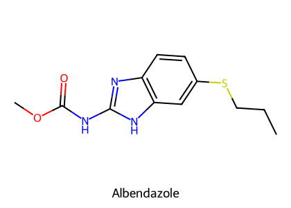
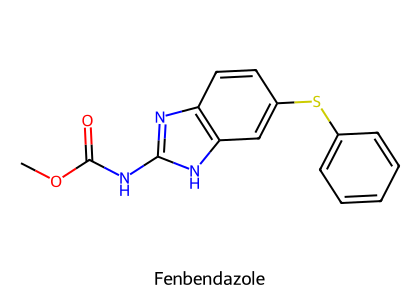
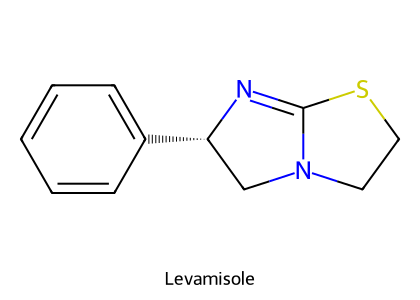
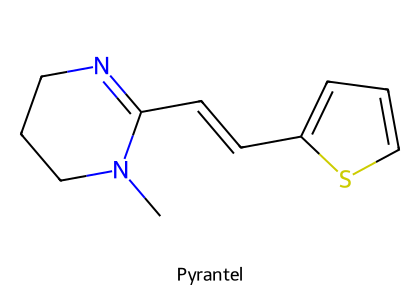
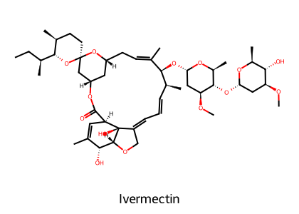
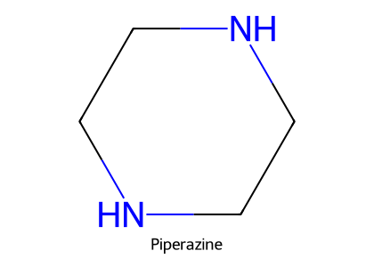
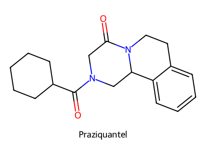

重點摘要
講義大綱列出抗原蟲藥與殺蟲劑，但本份講義實際內容只涵蓋抗蠕蟲藥（線蟲、心絲蟲、絛蟲、吸蟲）與抗藥性管理。抗原蟲藥與殺蟲劑屬於第二份講義〈抗原蟲及昆蟲藥〉，目前資料夾中只有一個網頁剪貼檔，尚未取得講義本體，取得後再補成第二頁。
抗寄生蟲藥是「對寄生蟲毒性大於對宿主」的毒物，選擇性永遠不完全。大部分抗線蟲藥都在打寄生蟲的神經肌肉：nicotinic 促效劑讓蟲痙攣性麻痺，macrocyclic lactones 與 piperazine 打開 Cl⁻ 通道讓蟲鬆弛性麻痺，emodepside 走 latrophilin 受體；benzimidazoles 則是抑制 β-tubulin 聚合，讓蟲餓死。要記的除了機轉，就是每個藥「對誰無效」與「誰不能用」：macrocyclic lactones 對絛蟲吸蟲無效、MDR1 突變犬（Collie 等）不能用高劑量 ivermectin、melarsomine 不能用在貓、albendazole 懷孕禁用。
- Benzimidazoles 抑制 β-tubulin 聚合（2025 期末考第 45 題）；albendazole 廣效（線蟲、吸蟲、絛蟲、梨形鞭毛蟲），致畸胎；fenbendazole 口服吸收少、腸道寄生蟲首選；BZD 之間交叉抗藥。
- Levamisole、pyrantel、morantel 是 nicotinic 促效劑 → 蟲體肌肉持續收縮、痙攣性麻痺；levamisole 也是免疫刺激劑，安全範圍窄；morantel 比 pyrantel 安全。
- Macrocyclic lactones（ivermectin、doramectin、selamectin、milbemycin、moxidectin）活化寄生蟲 glutamate-gated Cl⁻ 通道 → 鬆弛性麻痺；內外寄生蟲都有效（endectocide），但對絛蟲、吸蟲無效。
- MDR1（P-gp）突變犬：Collie、Australian Shepherd、Border Collie、Shetland Sheepdog、Old English Sheepdog → ivermectin 進入 CNS 中毒；避免併用 ketoconazole、itraconazole、cyclosporine、鈣通道阻斷劑（增加 BBB 穿透）。
- 心絲蟲：成蟲用 melarsomine（三價砷、腰部肌肉 IM、貓不可用，2025 期末考第 46 題）；微絲蟲用高劑量 ivermectin 或 milbemycin；預防用每月 macrocyclic lactone 殺 L4。
- Praziquantel：所有絛蟲成蟲與幼蟲（包生絛蟲囊不穩定），增加 Ca²⁺ 內流；最安全的抗絛蟲藥。BZD 對 Dipylidium 無效。
- Clorsulon：抑制糖解酵素，對成熟與未成熟肝吸蟲都有效、懷孕安全（2025 期末考第 47 題：抗吸蟲藥）。
- 抗藥性管理的核心是 refugia：保留一群沒被藥物篩選的敏感蟲；避免劑量不足；糞卵數減少試驗 <95% 視為抗藥。
本頁藥物總覽
途徑取自講義與 HBK Ch.16；產食動物需遵守休藥期。
| 藥物 | 類別／機轉 | 途徑與參考劑量 | 主要用途 | 重點注意 |
|---|---|---|---|---|
| Thiabendazole | BZD 原型 | PO | 反芻獸、馬（最早核准）；也有抗黴菌活性 | — |
| Albendazole | BZD：抑制 β-tubulin 聚合 | PO | 線蟲（成蟲與卵）、肺與肝吸蟲、包生絛蟲與囊尾蚴、梨形鞭毛蟲 | 致畸胎；牛休藥 27 天；懷孕前 45 天與繁殖年齡乳牛不可用 |
| Fenbendazole | BZD | PO（吸收有限） | 腸道寄生蟲首選：梨形鞭毛蟲、蛔蟲、鉤蟲、鞭蟲、絛蟲、蟯蟲 | 可用於泌乳牛（HBK）；牛休藥 8 天、豬 0 天 |
| Oxfendazole | BZD | PO（吸收好） | 牛羊線蟲 | 牛休藥 7 天 |
| Levamisole | Nicotinic 促效劑 | 豬飲水、牛注射、牛羊口服或灌服 | 腸胃道與肺線蟲；犬貓免疫刺激劑 | 安全範圍窄；對吸蟲、原蟲、絛蟲無效 |
| Pyrantel | Nicotinic 促效劑（去極化神經肌肉阻斷） | PO（錠、嚼錠、膏、懸液、飼料） | 犬貓蛔蟲 | 常與 praziquantel 合併 |
| Morantel | Pyrantel 的 3-甲基類似物 | PO | 牛羊腸胃道線蟲 | 比 pyrantel 安全（小鼠 LD50 5 g/kg vs 170 mg/kg） |
| Ivermectin | Macrocyclic lactone：活化 glutamate-gated Cl⁻ 通道 | PO、SC；心絲蟲預防 6–12 μg/kg 每月；殺微絲蟲 50 μg/kg 單次 | 線蟲、外寄生蟲（疥蟎、蝨） | MDR1 犬；對絛蟲、吸蟲無效 |
| Doramectin | Macrocyclic lactone，長效、高脂溶性 | 注射（牛羊） | 牛羊胃腸線蟲、肺蟲、牛蜱、疥蟎、蠅蛆 | 牛羊專用 |
| Selamectin | Macrocyclic lactone | 外用滴劑 | 犬貓跳蚤、蟎 | — |
| Milbemycin oxime | Macrocyclic lactone（milbemycin 群） | PO 0.5 mg/kg（預防與殺微絲蟲同劑量） | 心絲蟲預防、殺微絲蟲 | Collie 可安全使用（講義） |
| Moxidectin | Macrocyclic lactone | PO 3 μg/kg 每月 | 心絲蟲預防 | — |
| Piperazine | GABA 促效 → 蟲體肌肉鬆弛 | PO | 各種動物的蛔蟲 | 窄譜；肝腎功能不全謹慎 |
| Emodepside | 活化 latrophilin（LAT）受體 | 外用（貓，併 praziquantel） | 貓腸胃道線蟲；對其他藥物有抗藥性的線蟲 | 需 Ca²⁺ 與細胞外 K⁺ |
| Dichlorvos | 有機磷：不可逆抑制 AChE | PO（飼料） | 只用於豬：鞭蟲、結節蟲、糞小桿線蟲、鉤蟲、蛔蟲 | 毒性較高 |
| Melarsomine（Immiticide®） | 三價砷，結合 cysteine 硫氫基 | 腰部肌肉 IM 2.5 mg/kg q24h × 2 次（HBK） | 犬心絲蟲成蟲與 L5 | 貓不可用；肝腎毒性、血栓性肺炎 |
| Praziquantel | 增加 Ca²⁺ 內流 → 麻痺、外皮被消化 | PO 或 SC（不需禁食） | 所有絛蟲成蟲與幼蟲 | 最安全的抗絛蟲藥；包生絛蟲囊效果不穩定 |
| Epsiprantel | Praziquantel 類似物 | PO（幾乎不吸收） | 犬貓絛蟲 | — |
| Dichlorophene | 氧化磷酸化去耦聯 → ATP 耗竭 | PO，隔夜禁食後 | 犬貓 Taenia、Dipylidium | 包生絛蟲效果不一 |
| Clorsulon | 抑制 3-phosphoglycerate kinase 與 phosphoglyceromutase（糖解） | 牛 | 肝吸蟲成熟與未成熟蟲體 | 懷孕與繁殖動物安全 |
選擇性毒性與作用機轉
- 殺寄生蟲藥是毒物：對寄生蟲的毒性大於對宿主（選擇性毒性），但選擇性從來不完全，使用時一定有風險；不同寄生蟲與宿主物種反應不同，某些品種特別敏感。
- 分類：抗蠕蟲藥、抗原蟲藥、殺蟲劑。有些藥跨類別：ivermectin、selamectin、doramectin、eprinomectin 是內外寄生蟲藥（endectocides）；fenbendazole 屬抗蠕蟲藥但也有抗原蟲活性。
- 理想的抗寄生蟲藥：廣效、安全（中毒劑量至少為使用劑量的 3 倍以上）、易用、可負擔、單次給藥有效、無殘留。發展趨勢：廣效、雞尾酒療法、抗藥性管理。
- 除蟲菊（pyrethrins）：植物性殺蟲劑，對作物與動物害蟲毒性佳、環境中持續時間很短、對動物毒性相對低；pyrethroids 是合成類似物，效力與擊倒作用更強。
- 商品名混淆：同一分子有多個商品名，不同產品名稱相似（例如 HARTZ ULTRA-GUARD 與 VECTRA），可能造成誤用。
| 作用方式（講義） | 代表藥 |
|---|---|
| 1. 模仿神經傳導物質 → 寄生蟲麻痺 | Nicotinic 促效劑（levamisole、pyrantel、morantel）、macrocyclic lactones、piperazine、emodepside、有機磷 |
| 2a. 抑制微管合成 | Benzimidazoles |
| 2b. 抑制葉酸合成或代謝 | （抗原蟲藥，如 sulfonamides） |
| 2c. 抑制 thiamine 利用 | （抗球蟲藥，如 amprolium） |
| 2d. 氧化磷酸化去耦聯 | Dichlorophene |
| 2e. 抑制節肢動物幾丁質形成 | Lufenuron |
| 2f. 模擬昆蟲幼體激素 | （殺蟲劑） |
| 3. 改變繁殖：抑制原蟲複製、抑制線蟲產卵 | — |
※ 括號中的代表藥為講義未舉例、依類別補上的例子，詳細內容待第二份講義。
寄生蟲的神經傳導物質（講義引用 HBK Table 16-1）
| 寄生蟲 | 興奮性 | 抑制性 |
|---|---|---|
| 線蟲 | ACh、Glu | Glu、GABA |
| 絛蟲 | 5-HT | ACh |
| 吸蟲 | 5-HT | ACh、DA、NE |
| 節肢動物 | ACh、Glu | Glu、Octopamine、GABA |
抗線蟲藥作用位置（講義引用 HBK Figure 16-4）
| 標的 | 藥物 | 結果 |
|---|---|---|
| Nicotinic ACh 受體（Na⁺、Ca²⁺ 內流） | Levamisole、pyrantel、morantel | 持續去極化 → 痙攣性麻痺 |
| Glutamate-gated Cl⁻ 通道 | Macrocyclic lactones | Cl⁻ 內流、過極化 → 鬆弛性麻痺，咽部肌肉麻痺無法進食、產卵受抑 |
| GABA-gated Cl⁻ 通道 | Piperazine | 鬆弛性麻痺 |
| Latrophilin（LTP）受體（Gq → PLC → Ca²⁺） | Emodepside | 釋放抑制性神經胜肽 → 麻痺 |
Benzimidazoles（BZDs）重要


結構式依 PubChem 資料以 RDKit 自繪。注意：抗寄生蟲的 BZD（benzimidazoles）與鎮靜用的 BZD（benzodiazepines）縮寫相同，不要混淆。
- 機轉：抑制 β-tubulin 聚合 → 微管無法形成（影響吸收、運輸與細胞分裂）。
- 原型藥 thiabendazole：最早核准用於反芻獸與馬。
- HBK：所有 BZD 之間交叉抗藥；一般安全，但 albendazole 可能致畸胎與胚胎毒性；犬高劑量可能有肝與骨髓毒性。
| 藥物 | 抗蟲譜 | 藥動與用途 | 注意 |
|---|---|---|---|
| Albendazole | 廣效：腸胃與肺線蟲（成蟲與卵）、肺與肝吸蟲、包生絛蟲病與囊尾蚴、梨形鞭毛蟲 | 牛、羊、非泌乳山羊 | 懷孕動物謹慎（致畸胎）；牛：成熟肝吸蟲、休藥 27 天、懷孕前 45 天與繁殖年齡乳牛不可用 |
| Fenbendazole | 廣效：梨形鞭毛蟲、蛔蟲、鉤蟲、鞭蟲、絛蟲、蟯蟲、圓線蟲 | 口服吸收有限（留在腸道）；羊、牛、馬、魚、犬、貓、兔、海豹 | 腸道寄生蟲首選 |
| Oxfendazole | 廣效 | 消化道吸收好；牛羊線蟲 | — |
Nicotinic Agonists


結構式依 PubChem 資料以 RDKit 自繪。
Nicotinic ACh 受體（nAChR）是對 ACh 與尼古丁有反應的多胜肽受體，廣泛分布在 CNS、周邊神經、肌肉與免疫細胞。這類藥物選擇性活化線蟲的 nAChR → Na⁺、Ca²⁺ 內流 → 肌肉過度收縮 → 痙攣性麻痺，蟲體被排出。（對照：hexamethonium 是 nAChR 拮抗劑，同時干擾交感與副交感神經節。）
| 藥物 | 用途（講義） | 注意 |
|---|---|---|
| Levamisole | 牛、羊、豬、家禽、犬；腸胃道與肺線蟲；犬貓免疫刺激劑 | 對吸蟲、原蟲、絛蟲無效。HBK：最毒的驅蟲藥之一、安全範圍窄（尤其注射）；中毒為副交感刺激、痙攣、CNS 抑制、呼吸肌麻痺窒息；atropine 無法對抗其骨骼肌去極化阻斷 |
| Pyrantel | 1966 年上市、最廣泛使用的 tetrahydropyrimidine；去極化神經肌肉阻斷劑，主要治療犬貓蛔蟲 | 劑型多（錠、嚼錠、膏、懸液、藥餌、飼料） |
| Morantel | Pyrantel 的 3-甲基類似物；牛、山羊、綿羊腸胃道線蟲 | 安全性高於 pyrantel：小鼠口服 LD50 morantel tartrate 5 g/kg vs pyrantel tartrate 170 mg/kg；過量：呼吸加快、大量流汗、運動失調等膽鹼作用 |
HBK Ch.4（抗癲癇段落）列出可能降低癲癇閾值、讓控制良好的癲癇犬發作的藥物，其中包括部分抗寄生蟲藥：pyrantel、levamisole、pyrethroids、methoxychlor、lindane 與抗膽鹼酯酶類（如有機磷 dichlorvos）。癲癇犬驅蟲時優先考慮其他類別（如 fenbendazole、praziquantel），使用這些藥物時加強觀察。見 抗癲癇藥物。
Macrocyclic Lactones 與 MDR1必考

- Avermectins：土壤放線菌 Streptomyces avermitilis 發酵產物，16 員大環內酯
- 2015 年諾貝爾生醫獎（Campbell、大村智）
- Ivermectin：1975 年發現、1981 年用於獸醫
- HBK：avermectin 群（ivermectin、doramectin、eprinomectin、selamectin）有雙醣側鏈；milbemycin 群（milbemycin、moxidectin）沒有、更親脂
結構式依 PubChem 資料以 RDKit 自繪。
作用機轉
講義第 26 張寫「活化 Cl⁻ 通道」，第 29 張寫「binds to GABA channels in parasites」。HBK Ch.16 寫得更精確：在線蟲與節肢動物，macrocyclic lactones 活化 glutamate-gated Cl⁻ 通道（講義第 8 張的圖也是這樣標）→ 鬆弛性麻痺；在哺乳類，它們活化 GABA-gated Cl⁻ 通道——哺乳類的 GABA 受體在 CNS，平常被 BBB 的 P-gp 擋住，這就是選擇性的來源，也是 MDR1 犬中毒的原因。HBK：picrotoxin（GABA 拮抗劑）作為解毒劑效果不佳。
| 藥物 | 用途（講義） |
|---|---|
| Ivermectin | 廣效：頭蝨、疥蟎、盤尾絲蟲（河盲症）、線蟲感染、班氏絲蟲（象皮病） |
| Doramectin | Ivermectin 衍生物；牛羊專用、長效、高脂溶性；Haemonchus、Ostertagia、Trichostrongylus、Cooperia、Oesophagostomum、肺蟲 Dictyocaulus、人皮蠅幼蟲、牛蜱 Boophilus、牛疥蟎 Psoroptes |
| Selamectin | 犬貓外用滴劑，治療跳蚤、蟎 |
毒性與注意事項（講義）
- 對絛蟲、吸蟲無效。
- 經糞便排出 → 對水生動物與食糞昆蟲有毒，對鳥、植物、蚯蚓無毒。
- 專利過期後學名藥普及 → 使用量增加、部分寄生蟲產生抗藥性。
- HBK：在反芻獸、馬、豬安全範圍大，懷孕與種畜可用；SC 可能局部刺激；高劑量 CNS 抑制（無精打采、散瞳、運動失調、躺臥、昏迷）。
MDR1 基因編碼 P-glycoprotein（BBB 上的外排幫浦）。突變犬的 P-gp 缺陷 → ivermectin 進入 CNS → 中毒。易感品種：Collie、Australian Shepherd、Border Collie、Shetland Sheepdog、Old English Sheepdog。這些犬對其他 P-gp 受質藥物也敏感。食入 ivermectin 後越快出現嚴重 CNS 症狀，預後越差；可用 MDR1 基因檢測評估風險。
藥物交互作用：避免併用 ketoconazole、itraconazole、cyclosporine、鈣通道阻斷劑（P-gp 抑制 → 增加 macrocyclic lactone 穿過 BBB），即使在非突變犬也一樣。
其他抗線蟲藥

GABA 促效劑 → 蟲體肌肉鬆弛。各種動物的蛔蟲有效且安全；但譜窄，在部分家畜用途受限。吸收與排除都快，是可靠的驅蟲選擇；肝或腎功能受損的動物要小心。
結構式依 PubChem 資料以 RDKit 自繪。
| 藥物 | 機轉 | 用途 | 注意 |
|---|---|---|---|
| Emodepside | 新型驅蟲藥：活化 latrophilin（LAT）受體 → 抑制肌肉功能，減少運動、咽部吞嚥與產卵；需 Ca²⁺ 與細胞外 K⁺ | 核准用於貓的腸胃道線蟲；對其他驅蟲藥有抗藥性的線蟲仍有效（新機轉） | HBK：與 praziquantel 合併（Profender®） |
| Dichlorvos（DDVP） | 有機磷，不可逆抑制 AChE | 只用於豬：鞭蟲、結節蟲、Strongyloides、鉤蟲、蛔蟲 | 毒性較高；HBK：ACh 累積造成膽鹼刺激；虛弱動物不可用 |
心絲蟲治療與預防必考
| 目標 | 藥物 | 用法（講義） |
|---|---|---|
| 殺成蟲（adulticide） | Melarsomine（Immiticide®） | 見下方 |
| 殺微絲蟲 | 高劑量 ivermectin 或 milbemycin | Ivermectin 50 μg/kg 單次 PO 或 SC（Collie 不可用）；Milbemycin 0.5 mg/kg 單次 PO，2 週後可重複（Collie 可安全使用） |
| 預防（larvicide，殺 L4） | 每月 macrocyclic lactone | Ivermectin 6–12 μg/kg（約殺微絲蟲劑量的 1/10–1/5）；Moxidectin 3 μg/kg；Milbemycin 500 μg/kg（與殺微絲蟲同劑量），每月 PO 一次 |
- 殺死未成熟（L5）與成蟲；只用於犬，不可用於貓（HBK：貓在蟲體死亡時會發生嚴重反應）
- 三價砷化合物，結合 cysteine 的硫氫基使蛋白與酵素變性
- 腰部肌肉 IM；HBK：2.5 mg/kg q24h × 2 次，左右腰部肌肉各一針；重度感染先打 1 劑、1 個月後再打完整 2 劑
- 監測肝毒性、腎毒性、血栓性肺炎；糖皮質素可預防殺成蟲後的血栓性肺炎
- 殺微絲蟲可降低腎絲球腎炎發生率，並消除傳播來源；有些獸醫在微絲蟲數量不多時選擇不處理
- HBK：殺微絲蟲應在殺成蟲後 3–4 週開始
- L4 發育成 L5 需 2.5 個月 → 每月清除 L4 就足以預防
- 第一劑在初次接觸蚊子後 1 個月內給，最後一劑在最後一次接觸蚊子後 1 個月內給
抗絛蟲藥 Anticestodal Drugs

- 這些藥殺死絛蟲（taeniacides），不同於只讓蟲麻痺的過時藥 arecoline（taeniafuge）
- 死蟲可能被宿主消化，糞便中不一定看得到蟲體
- 控制中間宿主同樣重要：跳蚤（Dipylidium）、齧齒類（Taenia、Echinococcus）、蟎（Anoplocephala、Moniezia）
結構式依 PubChem 資料以 RDKit 自繪。
| 藥物 | 機轉 | 有效 | 無效或不穩定 | 注意 |
|---|---|---|---|---|
| Praziquantel | 電壓依賴性 Ca²⁺ 通道 → Ca²⁺ 內流增加 → 麻痺、外皮被消化 | 所有絛蟲，成蟲與幼蟲 | 包生絛蟲囊不穩定 | 常與 pyrantel、ivermectin、moxidectin 合併驅線蟲。HBK：PO 或 SC、不需禁食；可進入 CNS；最安全的抗絛蟲藥、不致畸胎 |
| Benzimidazoles | β-tubulin | 犬貓成熟 Taenia、Echinococcus；反芻獸 Moniezia；可能殺死牛羊體內的包生囊 | Dipylidium（瓜實絛蟲）無效 | — |
| Dichlorophene | 氧化磷酸化去耦聯 → 耗竭 ATP；破壞外皮膜兩側 pH 差 | 犬貓 Taenia、Dipylidium | Echinococcus 效果不一 | 隔夜禁食後口服 |
| Epsiprantel | Praziquantel 類似物 | 犬貓絛蟲 | — | HBK：口服幾乎不吸收 |
抗吸蟲藥 Antitrematodal Drugs
- 肝吸蟲（Fasciola hepatica）是全世界家畜最常見、經濟上最重要的吸蟲病；多為慢性、亞臨床；未成熟與成熟蟲體都會造成傷害。
- 抗吸蟲藥高度親脂，大多只對成熟吸蟲有效，對還在肝實質中的未成熟吸蟲無效。
- 犬貓有肺吸蟲（Paragonimus）。
| 藥物 | 機轉 | 用途 | 注意 |
|---|---|---|---|
| Clorsulon | 抑制糖解作用的 3-phosphoglycerate kinase 與 phosphoglyceromutase → 剝奪能量來源 | 對 F. hepatica 最有效，牛的成熟與未成熟蟲體都能殺死；晚秋與早春（螺季）治療 | 對巨肝吸蟲 F. magna 效果普通到差；對胃吸蟲、肺吸蟲無效；懷孕與繁殖動物安全 |
| Albendazole | β-tubulin | 牛的成熟肝吸蟲（主要殺成蟲） | 休藥 27 天；致畸胎：懷孕前 45 天與繁殖年齡的雌性乳牛不可用 |
驅蟲藥抗藥性管理
定義：寄生蟲族群中有較高比例的個體，對正常臨床劑量不再有反應。抗藥性影響畜牧收入與動物福利；因為缺乏替代的驅蟲方法，必須理解抗藥性如何產生，才能盡量延緩。
- 分子標的改變，藥物無法辨識
- 代謝改變，例如蟲體 P-glycoprotein 外排上調
- 藥物在蟲體內分布改變，到不了作用點
- 標的基因放大
- 同一化學類別中，對一個藥抗藥通常對同類其他藥也抗藥；也可能多重抗藥
- 新類別上市時抗藥等位基因頻率低；沒有用藥時抗藥基因中性或不利
- 抗藥性是用藥的結果，是達爾文式的篩選，篩選壓力就是驅蟲藥
偵測與現況
- 糞卵數減少試驗（FECRT）：比較治療前後與未治療對照組的糞卵數，減少 <95%（群體算術平均）判定為臨床抗藥。
- 小型反芻獸的抗藥性已非常嚴重：BZD、levamisole、avermectins 與 milbemycins（ivermectin、doramectin、moxidectin）都已出現；牛與馬相對沒那麼嚴重。
影響抗藥性產生的因素
| 類別 | 加速抗藥性的因素 |
|---|---|
| 寄生蟲遺傳 | 抗藥等位基因為顯性；涉及的基因越少越快；遺傳多樣性高；抗藥蟲適存度提升 |
| 寄生蟲生物學 | 世代短、繁殖力高；直接生活史；族群會移動；未治療的 refugia 中抗藥比例低 |
| 管理 | 劑量不足；使用長效藥讓蟲暴露在次治療濃度；化學性質本身（fenbendazole 可能比 ivermectin 更快產生抗藥） |
如果牧場上感染性幼蟲中抗藥比例持續增加，整體族群的抗藥性就會不斷惡化。所以放牧管理與用藥策略要維持大量敏感型（SS）寄生蟲留在環境中：只治療真正受寄生蟲影響的動物、讓能耐受的動物不治療（保留未篩選的 refugia）——這樣動物會承受一些寄生，生產可能有些損失，但能減緩抗藥性。
管理與替代方法（講義）
- 避免劑量不足、確保治療完全有效；規劃用藥時機減少環境中抗藥自由生活期的存活。
- 清除糞便、不同宿主輪牧；偏好短效藥物；搭配其他控制方法或改用不同機轉的藥。
- 停藥後沒有恢復敏感性的證據；短中期沒有現實的替代品；放牧管理可減少但無法取代用藥；疫苗、新化合物仍遙遠 → 必須盡量延長現有藥物的效力。
- 非化學方法：替代放牧、能量與蛋白質補充刺激免疫、濕熱氣候輪牧、馬場清除糞便、選育抗寄生蟲的宿主。
- 檢疫：新進動物以多類別驅蟲藥合併治療，排除帶入的寄生蟲。
臨床整合：共病與用藥
| 病患狀況 | 避免或謹慎 | 替代或處理 | 出處 |
|---|---|---|---|
| MDR1 突變犬（Collie、Australian Shepherd、Border Collie、Shetland Sheepdog、Old English Sheepdog） | 高劑量 ivermectin（殺微絲蟲、疥蟎治療劑量） | Milbemycin 殺微絲蟲；做 MDR1 基因檢測；注意其他 P-gp 受質藥物（如 vincristine、doxorubicin，見 抗癌藥物） | 講義；HBK |
| 正在使用 ketoconazole、itraconazole、cyclosporine、鈣通道阻斷劑 | Macrocyclic lactones | P-gp 抑制 → BBB 穿透增加；調整或改用其他驅蟲藥 | 講義 |
| 癲癇犬 | Pyrantel、levamisole、有機磷、pyrethroids | Fenbendazole、praziquantel；加強觀察 | HBK Ch.4 |
| 貓心絲蟲 | Melarsomine | 不用殺成蟲藥；以預防為主 | 講義；HBK |
| 懷孕動物 | Albendazole（致畸胎） | Fenbendazole、praziquantel（不致畸胎）、macrocyclic lactones（HBK：懷孕可用）、clorsulon（懷孕安全） | 講義；HBK |
| 肝腎功能不全 | Piperazine 謹慎；melarsomine 肝腎毒性 | — | 講義 |
| 心絲蟲成蟲治療後 | — | 糖皮質素預防血栓性肺炎；限制運動（臨床常規） | 講義 |
| 產食動物 | — | 遵守休藥期：albendazole 牛 27 天、fenbendazole 牛 8 天／豬 0 天、oxfendazole 牛 7 天；levamisole、albendazole 不用於繁殖年齡乳牛 | HBK |
| 環境 | Macrocyclic lactones 經糞便排出 | 對水生動物與食糞昆蟲有毒 | 講義 |
考點整理
- Q45：benzimidazoles 的主要作用機轉 → 抑制 β-tubulin polymerization。
- Q46：可驅滅心絲蟲成蟲 → melarsomine（ivermectin、milbemycin 為殺微絲蟲與預防）。
- Q47：抗吸蟲藥 → clorsulon。
- Q48：ionophore 抗生素類藥物對馬毒性較高的原因（屬抗球蟲範圍，第二份講義）。
以下是依講義與教科書推測的方向，並非出自歷屆國考題目：各類抗線蟲藥的作用標的（β-tubulin、nAChR、glutamate-gated Cl⁻、GABA、latrophilin）；macrocyclic lactones 對絛蟲吸蟲無效；MDR1 犬品種與 ivermectin；心絲蟲三階段用藥與劑量差異；praziquantel 機轉；BZD 對 Dipylidium 無效；clorsulon 對未成熟肝吸蟲也有效；albendazole 致畸胎；refugia 與 FECRT <95%。
學習重點整理
| 類別 | 代表藥 | 標的 | 關鍵點 |
|---|---|---|---|
| Benzimidazoles | Albendazole、fenbendazole、oxfendazole | β-tubulin | Albendazole 致畸胎；fenbendazole 腸道首選；對 Dipylidium 無效 |
| Nicotinic 促效 | Levamisole、pyrantel、morantel | nAChR（痙攣性麻痺） | Levamisole 安全範圍窄、免疫刺激；pyrantel 犬貓蛔蟲 |
| Macrocyclic lactones | Ivermectin、doramectin、selamectin、milbemycin、moxidectin | Glutamate-gated Cl⁻（鬆弛性麻痺） | Endectocide；對絛蟲吸蟲無效；MDR1 |
| Piperazine | — | GABA | 蛔蟲、窄譜 |
| Emodepside | — | Latrophilin | 貓；對抗藥線蟲有效 |
| Dichlorvos | — | AChE | 只用於豬 |
| 心絲蟲成蟲 | Melarsomine | 硫氫基 | 腰部肌肉 IM；貓不可用；血栓性肺炎 |
| 絛蟲 | Praziquantel、dichlorophene | Ca²⁺ 內流；去耦聯 | Praziquantel 最安全 |
| 吸蟲 | Clorsulon、albendazole | 糖解；β-tubulin | Clorsulon 對未成熟蟲也有效、懷孕安全 |